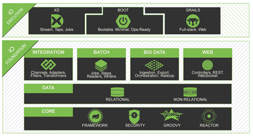
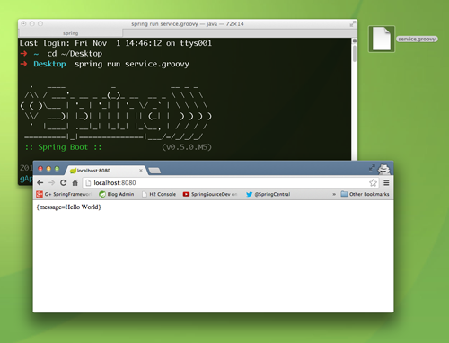
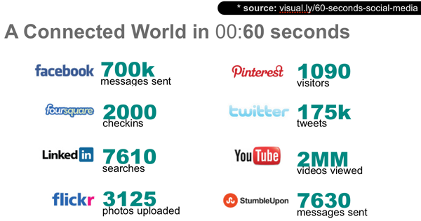
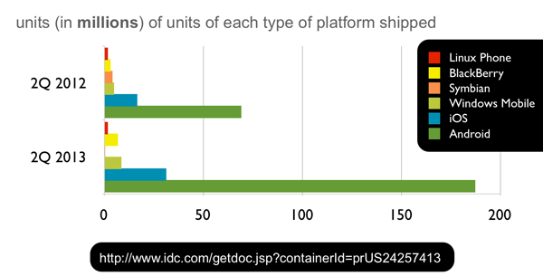
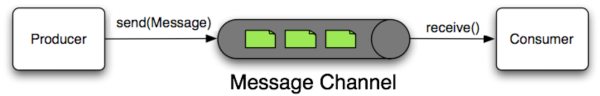
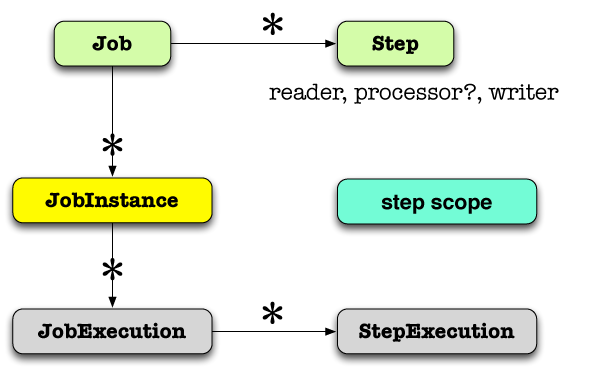

It can be a dizzying task to keep up with today's technologies, but Spring has your back. Today, developers are being asked to handle more challenges then ever, and to do so more quickly.
In this article we'll look at the latest and greatest Spring projects and their place in the Spring IO platform.

The basic idea is that we expect, and hope, developers will use one of the three channels at the IO Execution tier to start using Spring: Spring XD for big-data, batch and integration work, Spring Boot for convention-over-configuration and singularity-of-focus centric Spring and Java-centric application development, and Grails for rapid web application development with the Groovy language.
From there, the developer may expect to use any of the Spring modules in the IO Foundation box supporting integration, batch processing, big data, and web applications, all of which of course work with our data-access and processing APIs and enjoy the support of cross-cutting technologies like the core dependency injection container, and the Spring Security project.
Spring's got a new home at spring.io. spring.io is your one-stop shop for much easier access to documentation, the forums, the blog, detailed project information, and new getting-started guides and tutorials.
It's a question we on the Spring team get a lot: "How do I get started, quickly?" We're focusing on a two pronged approach: better guidance and education and more productive-by-default tools.
Spring's always had a good documentation story. Spring's always given away the source code and documentation, even when everyone else was selling it. Spring itself is ultimately the example code given in the pages of a book attempting to describe a better way forward. That way forward has taken us further and further from those initial few steps as Spring has grown to embrace and support new technologies. It can be easy to forget what they looked like. So, we revisited our getting started experience. We've created task-focused getting-started guides that explain how to acheive a given task in a short tutorial that you should be able to work through in a lunchtime. Each guide starts with a working code base against which you may check your work, and a blank, starter codebase to levelset and start fresh. So, suppose you've heard about REST and want to incorporate it in your application: just check out the Building a RESTful Web Service guide, written by experts on the Spring team, about how to acheive this with the Spring IO platform! If you just want to skip to the punchline, you'll get working code you can use. For the details, just follow along with the guide!
Whenever possible, these guides are written using Spring Boot. Spring Boot makes it easy to create stand-alone, production-grade Spring based Applications that can you can "just run". Spring Boot takes an opinionated view of the Spring platform and third-party libraries so you can get started with minimum fuss.
For a very quick getting started experience with Spring Boot, install the spring command line tool, and then put the following into a file named service.groovy:
@Grab("spring-boot-starter-actuator")
@RestController
class Example {
@RequestMapping("/")
String home() {
[message: 'Hello World']
}
}
This is a Groovy-language Spring MVC REST controller that simply returns an object with a property, message. On the command line, run spring run service.groovy and it will start up and give you a working REST endpoint which you can hit from any browser at http://127.0.0.1:8080/.

If you're an Java developer working in Eclipse then check out our open-source Spring Tool Suite and the Groovy/Grails Tool Suite distributions. They layer on top of an existing instance of the latest-and-greatest Eclipse distribution or you can download them as separate IDEs. I think this last approach is the far more productive path, if you want anything else just add it!
Today's applications are as often as not REST-powered backends with rich, JavaScript and HTML5-based browser-based frontend clients or mobile clients. REST, of course, is not a standard but a set of principles designed to promote the use and consumption of services that build on, as opposed to merely transit through, HTTP as a platform.
Spring MVC (part of the Spring core framework) makes it dead simple tob build RESTful web services, and there's an even more concise syntax for building REST services in Spring framework 4's new @RestController annotation:
package demo;
import org.springframework.web.bind.annotation.RequestMapping;
import org.springframework.web.bind.annotation.RequestParam;
import org.springframework.web.bind.annotation.RestController;
@RestController
public class GreetingController {
@RequestMapping("/hi")
public String sayHi(@RequestParam String name){
return "Hi, " + name +"!";
}
}
Here's an example of a REST web service that exposes a information about user and customer entities under the /users and /customers endpoints. In the video we'll use basic HTTP GET access from the browser and through an HTTP client that can be installed as a browser plugin to read and delete records.
Note that the output is in JSON encoding.
In the example above, our REST services worked, but suffered from a few weaknesses. First, clients would need to know the deep-links a-priori to be able to access any other resources related to a given entity. In addition, there's no accounting for state! Some resources are stateful. For example, it shouldn't be possible to add something to a shopping cart after the user's already checked out, but there's nothing stopping a client from trying, anyway.
Hypermedia, as espoused in the HATEOAS design pattern can help us here. Ultimately, HATEOAS is just about encoding metadata, or hypermedia, along with the response.
If you use Spring HATEOAS, you simply return a Spring HATEOAS Resource<T> instance from your Spring MVC controller methods. Here is an example interaction with a HATEOAS-flavored rewrite of the first example:
@RequestMapping(method = RequestMethod.DELETE, value = "/users/{user}")
@ResponseBody Resource<User> deleteUser( @PathVariable Long userId ) {
User user = crmService.removeUser(userId);
Collection<Link> links = new ArrayList<Link>();
links.add(linkTo(methodOn(UserController.class)
.loadUser(userId)).withSelfRel());
links.add(linkTo(methodOn(UserController.class)
.loadUserCustomers(userId)).withRel( "customers" ));
links.add(linkTo(methodOn(UserProfilePhotoController.class)
.loadUserProfilePhoto(userId)).withRel( "photo" ));
Resource<User> userResource = new Resource<User>(user, links);
return new ResponseEntity<Resource<User>>(userResource, HttpStatus.OK);
}
In the example above, I return a Spring HATEOAS Resource object which contains a collection of Link objects and a payload of type User. User is the
entity being returned to the client. The result looks something like this:
{
"firstName": "Josh",
"lastName": "Long",
"username": "joshlong",
...
"links" : [
{ "rel": "self", "href" :"http://localhost:8080/users/5" },
{ "rel": "photo", "href" :"http://localhost:8080/users/5/photo" },
{ "rel": "customers", "href" :"http://localhost:8080/users/5/customers" }
]
}
This extra metadata links to resources that have relevant relationships with this resource. Clients follow rels, not URIs, and can tailor their behavior based on the presence of absence of links. A link to checkout, for example, would be inappropriate when there's nothing in the shopping cart.
Here are some resources to get started with Spring and REST:
REST is a great approach to building HTTP bound web services, but HTTP is essentially a one-sided conversation where the client may only initiate conversations. For an application to be more interactive, it needs to needs to support bi-directional, asynchronous comunication between the client and server. Websockets is a standardized protocol designed to support these requirements, essentially exposing a bidirectional socket from the server to the client. A secure version of the WebSocket protocol is implemented in Firefox 6, Safari 6, Google Chrome 14, Opera 12.10 and Internet Explorer 10.
Spring supports the related JSR 356, but offers far more than just that, filling in the gaps where the JSR (understandably) was vague. Spring's websocket can work independant of the JSR, and offers support for STOMP-framed messaging over websockets. In addition, Spring's websocket support also supports the Sock.JS protocol, a superset of the websocket protocol that the popular Sock.js client can use to offer graceful degradation of experience on older browsers.
Here is an example of a websocket-ready Spring MVC controller. The getPositions method handles all calls from the client to subscribe to events on the /positions destination. This is a passive channel that sends back positions at the time of the call. The executeTrade method handles calls from the client into the Spring MVC websocket controller. Both methods are accompanied by an argument for the javax.security.Principal which Spring Security is placing in the request for us, automatically.
@Controller
public class PortfolioController {
private static final Log logger = LogFactory.getLog(PortfolioController.class);
private final PortfolioService portfolioService;
private final TradeService tradeService;
@Inject
public PortfolioController(PortfolioService portfolioService, TradeService tradeService) {
this.portfolioService = portfolioService;
this.tradeService = tradeService;
}
@SubscribeEvent("/positions")
public List<PortfolioPosition> getPositions(Principal principal) throws Exception {
logger.debug("Positions for " + principal.getName());
Portfolio portfolio = this.portfolioService.findPortfolio(principal.getName());
return portfolio.getPositions();
}
@MessageMapping("/trade")
public void executeTrade(Trade trade, Principal principal) {
trade.setUsername(principal.getName());
logger.debug("Trade: " + trade);
this.tradeService.executeTrade(trade);
}
@MessageExceptionHandler
@SendToUser("/queue/errors")
public String handleException(Throwable exception) {
return exception.getMessage();
}
}
To see websockets in example, check out the following video.
Spring Security integrates well with enterprise authentication and authorization backends like SAML, Kerberos, pam, and LDAP. Spring provides best-of-breed open-web and enterprise ready security for modern applications. It can be used across the Spring IO platform. Spring Security can be used for enterprise-y integration with , and more. Spring Security also features best-of-breed support for open-web security and protection, supporting - for example - acting as both an OAuth client and service and provides comprehensive CSRF protection.
There are many great resources to get started with Spring Security. Here are some:
Today's web is busy, connected. Today's users have a lives all their own online, and the best applications usually find a way to integrate with that online persona. This is easy to do because, thanks to REST, there are many rich third party APIs with which to integrate today - SOA has finally arrived! - and by and large they're all secured with either OAuth 1.0, OAuth 1.0.a or OAuth 2.0. Spring Social provides the core OAuth authentication and authorization support as an OAuth client, and makes it dead simple to layer on top type-safe Java API bindings. There are many bindings provided already, out of the box, and via a rich ecosystem of third party bindings built on top of Spring Social.

Once Spring Social Facebook has established a valid Facebook API coonection, we can use the Facebook API in our Spring MVC code with no problems!
@Controller
@RequestMapping("/")
public class HelloController {
@Inject private Facebook facebook;
@RequestMapping(method=RequestMethod.GET)
public String helloFacebook(Model model) {
model.addAttribute(facebook.userOperations().getUserProfile());
return "hello";
}
}
Here's an example working through the Spring Social Showcase, which features lots of cool integrations and examples. Other third party bindings often add their own screens when they fork this particular project to showcase their bindings' unique features.
There are a lot of great ways to get started with Spring Social.
Today's users are accessing the web primarily through their mobile devices. Mobile applications extend the reach of your business significantly.

There are many people using mobile ecosystem applications and Spring can get you there, quicker. Spring for Android provides the powerful RestTemplate object and makes it so that any REST service you'd like to talk is as easy as in the core Spring framework. Spring for Android can even be made to work with Spring Social-provided bindings!
Spring Mobile makes it easy to serve mobile-form factor friendly HTML applications and handle moble visitors in a more device-appropriate way. This can be a useful approach when developing fallback experiences for platforms you don't intend to prioritize. Many companies adopt such a strategy for applications not destined for Android or iOS.
Here's an example of working with two applications, one an iOS Objective-C client and the other a Spring for Android client. They both speak OAuth to communicate with the Spring Security OAuth-secured REST service I introduced earlier.
Spring provides a rich set of technologies to work with data and data-services.
There is in the core Spring framework great support for JDBC, and JDBC-based ORM access, including a transaction API that insulates you from the various mutually incompliant APIs typical of transactional resources like SQL databases and message queues.
The Spring Data projects embrace the new breed of so-called NoSQL, NewSQL, or NOSQL solutions. Spring Data is not one API to rule them all, instead it is an umbrella project with specific APIs for popular "database" technologies like Redis, MongoDB, and Neo4J. There are many third party bindings, and some support technologies like ElasticSearch and SOLR, CouchDB, and Riak.
One concept commont to many Spring Data modules, including the Spring Data JPA module, is the notion of a Spring Data repository. A Spring Data repository is an interface that Spring Data implements at runtime using convention-over-configuration to satisfy the interface contract dynamically, typically by interacting with somebackend resource. Here's a Spring Data JPA repository that I can inject anywhere in my code and use. I've commented what sort of query each method generates, basically.
@RestResource (path = "users", rel = "users") // automatically exposes a REST endpoint at /users/*
public interface UserRepository extends PagingAndSortingRepository<User, Long> {
// select * from users where username = ?
User findByUsername(@Param("username") String username);
// select * from users where firstName =? or lastName = ? or username = ?
List<User> findUsersByFirstNameOrLastNameOrUsername(
@Param("firstName") String firstName,
@Param("lastName") String lastName,
@Param("username") String username);
}
In this case I've turned on Spring Data JPA's repository support, but I could've just as easily turned on Spring Data MongoDB's, Spring Data Neo4j's or Spring Data GemFire's and those query methods would've instead mapped to those backend databases, instead of SQL.
Today's Hadoop ecosystem represents a fantastic new opportunity with some very familiar problems. Think back to 2003 - Spring was new on the scene - and being the guy that could get Hibernate, Quartz and Struts working in the same web application ten years ago was a surefire way to become an office rock-star! These projects were developed in isolation by individual open-source projects absent each others use-cases and standards: they didn not share common runtime concepts and did not share common API concepts like transaction management. In today's world, using Hibernate and Struts and Quartz in the same application is a snap thanks to Spring. In the Hadoop ecosystem today, we find ourselves with the same sort of integration challenges and here again Spring is offering a solution. Spring for Hadoop makes working with Hadoop-ecosystem technologies like HBase, Hive, Pig, Cascading, and YARN from within standard Spring as easy as possible. In addition, Spring for Hadoop can rely on platform niceties like property-placeholder resolution to ease configuration.
Spring for Hadoop is known to work with the following Hadoop distributions:
To learn more about Spring for Hadoop, check out these resources:
Spring clearly knows how to talk to the data sources you're probably most interested in talking to. The next question, of course, is how to process data from those datastores. Spring supports all manner of approaches.
Spring Integration is an integration framework in the style of the patterns in Gregor Hohpe and Bobby Woolf's epic tome, Enterprise Integration Patterns. In the world of Enterprise Integration, systems are connected through channels (message queueus). Messages flow from one component to another, transforming, enriching, splitting, aggregating and routing messages as they fly through the event bus. Spring Integration offers a set of adapters - components that can adapt messages from external systems into standard Spring Integration messages and thus connect Spring Integration applications with the different systems like FTPS, SFTP, Twitter, Splunk, JDBC, JMS, AMQP, Twitter, and GemFire continuous-queries.

Spring Integration is all about reacting to events in realtime, about being able to integrate with data and services from disparate systems. Spring Batch is all about the safe processing of large amounts of sequential data like large datasets in, for example, a flat file, a JDBC database, or a large XML document. Its design is also largely intact in the Batch JSR, where we contributed a lot of leadership to make it the best possible standard for the community. As a specification, JSR 352 is necessarily vague on some poionts. In particular, it does not prescribe any item readers and writers out of the box. Users going to the JSR via the Spring Batch implementation will appreciate the rich set of readers and writers unique to Spring Batch.
Spring Batch jobs contain a sequence of one or more steps. Each step may optionally read (through its provided ItemReader), optionally process (through a provided ItemProcessor), and optionally write (through a provided ItemWriter).

Here's an example of using Spring Integration to respond to new file system events ("there's a new file in a monitored folder") and then, as a result, process the file using Spring Batch. The code is available in the resources below.
For more resources on using Spring Batch and Spring Integration: